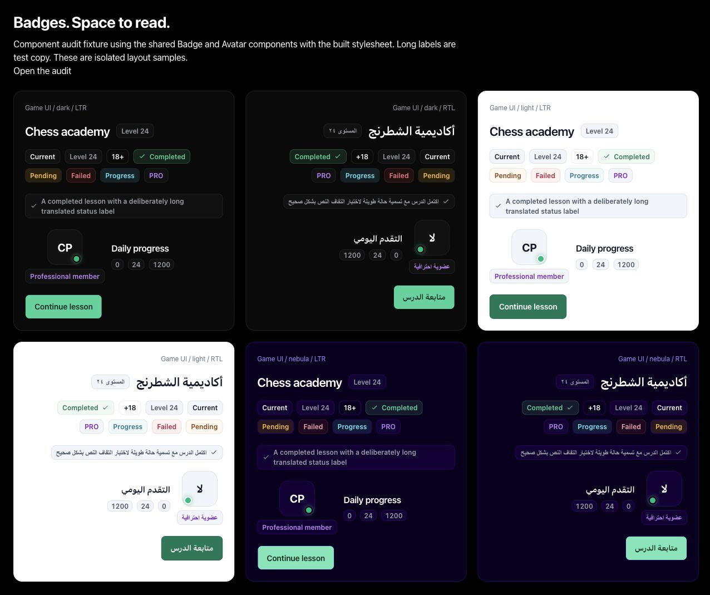
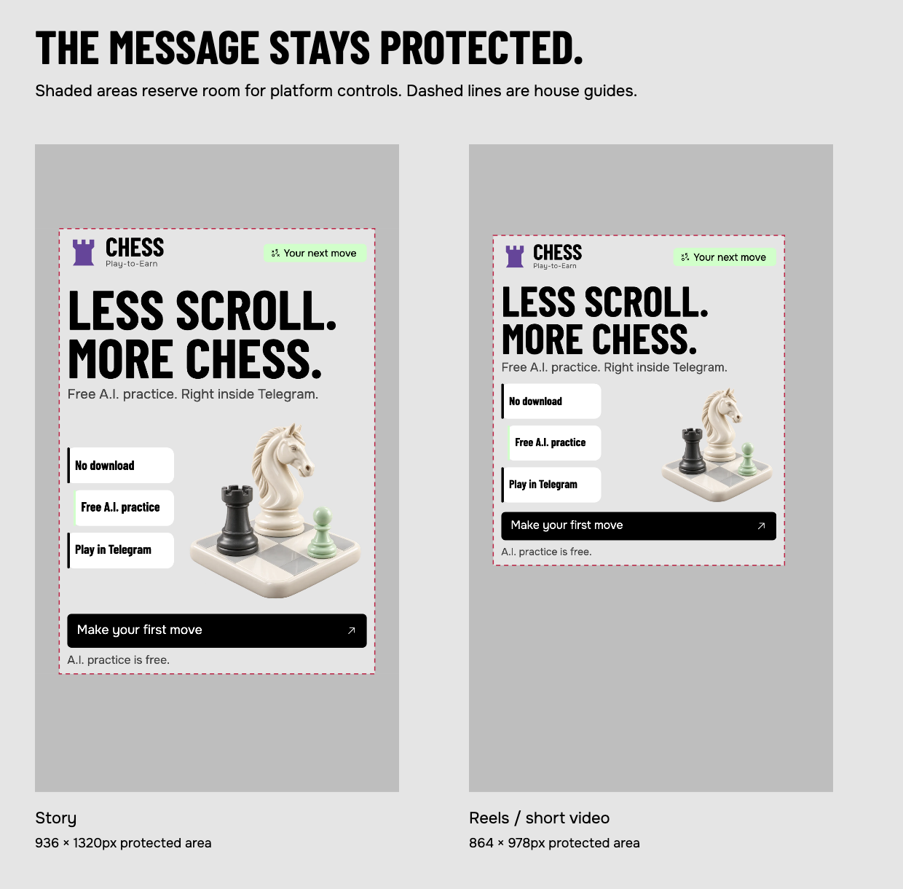

SPACE WITH A PURPOSE.
The rejected Story compressed its message, card, sculpture and action into a short middle stack, then placed a large number and footer slogan below the safe area. The guide was treated as a text-only check. This revision rebuilds all seven families in each native format, with a 24px internal inset inside each protected envelope.
Problems and corrections
| Unsafe footer content | The slogan at y1710 and number at y1420 sat below the old y1248 protected edge. They were excluded from checks as “decorative” despite being visible content. Both are removed. Every foreground shape now gets a safe-area check. |
|---|---|
| One vertical guide for different placements | The tight Reels envelope was applied to Stories, leaving a large unused bottom band. Story now uses x72–1008 / y250–1570. Reels uses x72–936 / y270–1248. Selecting either creates its own composition and its own export. |
| Fixed text positions | Edited headlines and supporting lines could collide, or steal visual space without triggering a warning. The next row starts after measured glyph height. Component boxes require 16px separation; too much copy blocks export. |
| Small, crowded demonstration | The sculpture was only 360px wide in the original Story, squeezed beside a card immediately above the action. Art and proof now occupy separate columns in the available demonstration row; the Story sculpture grows to about 540px. Opening and rivalry use staggered proof tiles; the new chess-culture meme uses conversational tiles. Puzzle, lesson, clock and stake families keep distinct evidence. All use measured text. |
| Weak legibility and hidden terms | Square notes previously dropped to 20px. Body text now starts at 34px on square, 38px on portrait, 40px on Story and 42px on wide. Terms remain at 30–34px, above the lower guide, and are never removed to fit an edited headline. |
| Outdated identity and excessive color | The old yellow knight and condensed uppercase wordmark are replaced by the current open violet rook and outlined CHESS lockup. Full mint/yellow surfaces are removed. Mint is a small accent; existing saved copy is preserved when old surfaces migrate to paper. |
| Incomplete validation | Old checks covered selected text roles and only proof-to-action collisions. The new checks include art, logo, label panels, cards, icons, board coordinates, terms, all text bounds, and component separation. Negative checks deliberately move elements outside the safe area and inject collisions and overlong copy. |
| Preview and export mismatch | Canvas used a top text baseline while SVG guessed an 0.82em offset. Both now use measured alphabetic baselines. Preview masks are anchored to the actual artboard, visible by default, and excluded from downloaded images. |
Badge audit
The badge system now reserves space in the layout. One restrained accent introduces the campaign; neutral metadata and section eyebrows support it. Labels wrap at their normal size, with fixed icons, instead of shrinking or floating over another element.
| Floating labels over content | Avatar level/tier labels and membership pricing tags previously sat on images or card corners. Text badges now have their own rows. Pricing cards grow with their labels. Only a small online dot remains anchored to the avatar image, with logical positioning for right-to-left layouts. |
|---|---|
| Rows that could not wrap | Headers, product metadata, progression rows and admin summaries now use wrapping rows and explicit gaps. Long labels continue below the heading rather than competing with the title, amount or action. |
| Conflicting badge styles | Website pages share Badge, BadgeRow and Eyebrow. The game uses its own Badge and BadgeRow with semantic variants, separate theme tokens and a fixed icon wrapper. Standalone padding, oversized capsules, glow effects and faint completed-state labels are replaced. |
| Poor light-theme contrast | The measured old amber badge was 3.06:1 and neutral metadata was 4.34:1 on its badge surface. Light neutral ink is now #475569; amber is #92400E. After correction, the minimum measured badge contrast across the samples is 4.98:1. |
| Template label competing with the brand | Native export labels use Onest 30px, fixed 30px icons, a 10px gap, 20px horizontal padding and a 12px radius. They sit beside the logo only when its clear space fits; longer labels move below it and push the headline down. Two regression checks verify that placement and prevent font shrinking. |
| Metadata treated like an action | Static badges remain passive. Filters and selections keep their existing interactive controls with at least 44px hit areas. Status words carry the meaning as well as color; supporting section labels use quiet text. |
Badge verification
Eight public pages and eight article pages were checked at 320, 390 and 1280px: 48 page cases. Isolated fixtures render the actual shared game components and built CSS in dark, light and Nebula themes, in both left-to-right and right-to-left layouts. Those 18 cases, plus six website-surface cases, pass wrapping, clipping, icon sizing, overlap and contrast checks. Authenticated account states were not opened; the fixture contains test labels and no account data.
View the badge QA evidence · Inspect game badges · Inspect website badges

Design rules live in BRAND_DESIGN_SYSTEM.md and design-system/MASTER.md for the game, and design-system/website/DESIGN.md §8.5 for public pages. Currency logos, achievement artwork, the arena reward panel and the isolated chess clock retain their distinct functions.
Placement proof
Shading reserves space for interface controls; the dashed box protects the full foreground. These are explicit house guides, with a 24px inset inside the protected envelope.

Verification
The pack contains 40 PNGs and 40 SVGs: 28 family/format combinations, four puzzle answers and eight extra Reels compositions. Each is checked with three approved surfaces and both hooks: 240 layout cases. Deliberate overflow and unsafe-element checks verify the guard itself. Review records are in the QA report.
Safe zones depend on the final placement, caption and optional interface elements. TikTok’s current official specification confirms that dependence. Meta’s public help redirected to sign-in during this audit, so these pixel envelopes are labeled house defaults rather than claimed as a universal official specification.
Brand source: design-system/website/DESIGN.md v2.6, §6.5 and website/public/brand. This audit covers local templates, shared game metadata components and public-page badges. Checks compare normal-flow content; fixed scrolling interface layers are separate.